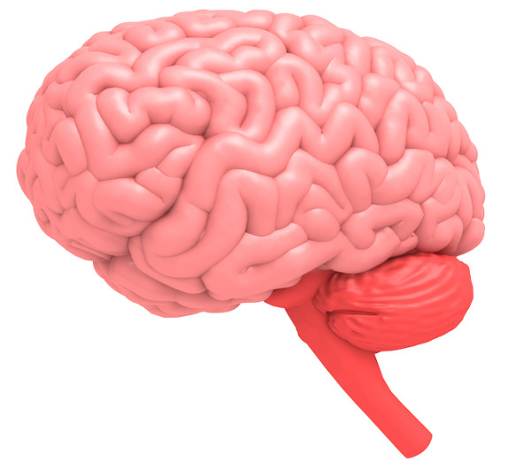
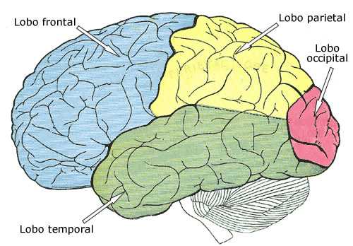

o cerebro é reponsável pela capacidade de pensamento, movimentos voluntário, linguagem, julgamento e percepção.É uma porção do sistema que está cintida no interior da caixa craniana, faz parte do encéfalo, sendo reponsável por representar cerca de 80% da massa dessa porção do SNC.
Além disso, é também o cérebro o reponsável pelo controle da contração dos músculos esqueléticos e intregação de informações sensorais.
Á medida que o embrião humano se desenvolve, o tubo neural forma três regiões na sua porção anterior denominadas prosencéfalo, mesencéfalo e rombencéfalo. Essas três regiões serão responsáveis por formar o éncefalo humano, O córtex pré-frontal, a região mais evoluída do nosso cérebro, a região responsável pela nossa regulação emocional, começa a amadurecer a partir dos 3 a 4 anos de idade. E o cérebro só fica completamente maduro por volta dos 25 anos de idade, a imagem abaixo mostra o desenvolvimento ainda no saco gestacional.

O cérebro pode ser dividido em duas partes, hemisfério cerebral esquerdo e hemisfério cerebral direito, que estão conectados pelo corpo caloso, uma estrutura formada por um espesso feixe de fibras nervosas.

*Lóbulo Frontal: Está localizado diretamente atrás da testa e é responsável pelos nossos movimentos; emoções; raciocínio; personalidade e pensamentos.
*Lóbulo Temporal: Está localizado atrás do lobo frontal e é responsável por nossa memória; equilíbrio; estímulos auditivos e por nosso estado de ânimo.
*Lóbulo Parietal:Ficam atrás das orelhas e são o segundo maior lobo. É responsável por nossa percepção sensorial; sensação de dor; pressão e temperatura.
*Lóbulo Occipital:Situam-se na parte posterior da cabeça e são responsáveis por nossa percepção visual, incluindo cor, forma e movimento.
*Além desses quatros, ainda existe a insula, que é uma parte do córtex cerebral localizada em ambos os hemisférios do cérebro, estando ligada a nossos desejos vícios.
